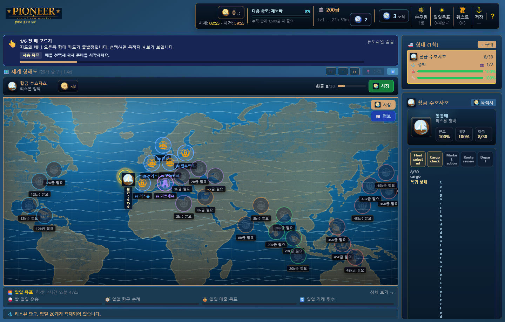

Pioneer NAN 2026 게임 소개서
지금 팔까, 더 멀리 갈까?

왜 재미있는가
Pioneer의 시장에는 외워서 반복할 하나의 정답이 없습니다. 3분마다 가격이 조금씩 움직이고, 플레이어가 상품을 사거나 팔면 해당 항구의 가격이 즉시 반응합니다. 여기에 1시간마다 외부 대형 사건이 일부 항구의 특정 상품을 크게 흔듭니다.
그래서 플레이어는 매번 같은 질문을 다시 하게 됩니다.
지금 이 가격에 살까? 여기서 팔까? 더 큰 차익을 위해 먼 항구까지 갈까?
좋은 가격을 찾았다고 끝이 아닙니다. 빠른 배는 적재량이 작고, 큰 화물선은 느립니다. 긴 항로에서는 연료와 선체를 버틸 선원이 필요합니다. 출항 전에는 예상 수익, 이동 시간, 위험 등급, 위협과 차단 사유를 함께 비교해야 합니다.
결국 하나의 거래는 다음 선택으로 이어집니다.
시세 판단 → 거래 결과 확인 → 선원 배치 → 선박 선택
→ 항로 결정 → 출항과 성장 → 다시 시세 판단재미의 심리학적 설계
Pioneer의 핵심 루프는 게임 이론과 행동심리학의 검증된 원리를 무역 시뮬레이션 문법으로 번역한 결과입니다.
변동 비율 강화 — 다음 기회를 예측할 수 없다
가격은 3분마다 ±2.5% 범위에서 소폭 변동하고, 1시간 주기의 대형 사건은 특정 항구를 16~38% 흔듭니다. 이 두 주기가 서로 독립적으로 작동하기 때문에 "다음 기회"가 언제 올지 플레이어는 정확히 알 수 없습니다. 행동심리학에서 변동 비율 강화(Variable Ratio Reinforcement)는 가장 강한 지속 행동을 유도하는 보상 구조입니다. 슬롯머신이 이 원리로 작동하듯, Pioneer의 시장도 "조금만 더 기다리면 기회가 올 수 있다"는 기대를 계속 살려둡니다.
손실 회피 — 떠난 배를 돌릴 수 없다는 긴장감
심리학자 Kahneman과 Tversky의 연구에 따르면 인간은 동일한 크기의 이익보다 손실을 약 2배 더 크게 느낍니다(손실 회피, Loss Aversion). Pioneer는 이 원리를 항해 위험 구조에 직접 연결합니다. 화물을 가득 싣고 출항한 뒤 항구에 도착하기 전에 시세가 급락하면, 플레이어는 이익 기대치보다 손실 가능성에 훨씬 강하게 반응합니다. 항로 요약 화면에서 위험 등급과 차단 사유를 명시적으로 보여주는 이유는, 플레이어가 손실 회피 본능을 정보로 제어할 수 있게 하기 위해서입니다.
행위성과 인과감 — 내가 시장을 움직인다
플레이어가 대량 거래를 하면 해당 항구의 가격이 최대 ±18% 즉시 반응합니다. 이 설계는 행위성(Agency)을 만들기 위한 것입니다. "내 결정이 세계에 흔적을 남긴다"는 감각은 단순 숫자 변화와 다릅니다. 이는 결과의 소유감을 만들고, 나쁜 결과를 경험했을 때도 "내가 잘못 판단한 것"으로 받아들이게 해 재도전 동기를 높입니다. 자기 결정이 실패의 원인이라고 느끼는 플레이어는 운이 나빠서 실패했다고 느끼는 플레이어보다 더 오래 게임을 합니다.
정보 우위 추구 — 감이 아니라 분석으로 이기고 싶다
가격 히스토리(최근 20개)와 시장 정보 패널은 순수한 정보 도구입니다. 그러나 심리학적으로는 역량감(Sense of Competence)을 자극합니다. 데이터를 분석해서 좋은 거래를 성사시킨 플레이어는 "운이 좋았다"가 아니라 "내가 잘 읽었다"고 느낍니다. 이 역량감은 자기효능감(Self-Efficacy)과 연결되며, 플레이어가 어려운 시세 상황에서도 포기하지 않고 계속 분석을 시도하게 만드는 핵심 동력입니다.
시간 압박과 기회 비용 — 타이머가 만드는 긴장
3분 소폭 변동과 1시간 대형 사건의 카운트다운은 화면 상단에 항상 노출됩니다. 이는 FOMO(Fear of Missing Out)와 시간 압박을 동시에 자극합니다. "90초 뒤에 가격이 바뀐다"는 정보는 플레이어를 결정 지연에서 꺼내 행동으로 밀어냅니다. 동시에 항로 이동 시간이 길면 "이 기회를 놓친다"는 기회 비용 계산도 하게 만듭니다. 모든 출항 결정에는 시간이라는 세 번째 차원이 항상 붙어 있습니다.
점진적 성장과 가능성 확장 — 어제는 못 갔던 항구를 오늘 간다
Pioneer의 성장 구조는 단순 수치 상승이 아닙니다. 더 좋은 선박은 더 먼 항구에 도달 가능한 시간을 단축하고, 더 많은 선원은 다중 함대 운용을 가능하게 합니다. 이 설계는 심리학의 확장 이론(Broaden-and-Build Theory)과 연결됩니다. 성장할수록 플레이어가 고려할 수 있는 전략의 범위가 넓어지고, 같은 시세표를 보면서도 전에는 보이지 않던 기회가 보이기 시작합니다. 성장이 능력을 주는 것이 아니라 판단의 범위를 넓혀주는 것이 핵심입니다.
미완의 루프 — 항구에 도착할 때까지 멈출 수 없다
자이가르닉 효과(Zeigarnik Effect)에 따르면 인간은 완료된 작업보다 미완료 작업을 더 강하게 기억합니다. Pioneer의 항해 중 상태는 항상 "진행 중"입니다. 화물을 싣고 출항한 선박이 아직 항구에 도착하지 않은 상태, 가격 타이머가 카운트다운 중인 상태, 받아놓은 퀘스트의 진행률 — 이것들이 모두 미완의 루프입니다. 플레이어는 의식하지 못해도 이 미완의 고리를 닫으려는 심리적 당김을 느낍니다.
살아 있는 항구 상품 시장
Pioneer의 시장은 실제 주식 거래 기능이 아닙니다. 대신 모의 주식처럼 가격 흐름을 읽고 매수·매도 타이밍을 판단하는 경험을 항구 상품 무역으로 옮겼습니다.
| 시장 변화 | 실제 규칙 | 플레이 감각 |
|---|---|---|
| 소폭 변동 | 3분마다 최대 ±2.5% | 기다릴지 지금 거래할지 고민 |
| 플레이어 거래 영향 | 거래 즉시, 영향 상한 ±18% | 내 행동이 가격을 움직이는 손맛 |
| 대형 시장 사건 | 1시간마다 2~4개 항구의 한 상품이 16~38% 변동 | 익숙한 항로가 갑자기 기회나 함정으로 변화 |
| 가격 히스토리 | 최근 20개 가격 | 감이 아니라 흐름을 보고 판단 |


선원: 같은 배의 항해를 바꾸는 구성
선원은 단순 수집 카드가 아니라 실제 운항 수치에 연결됩니다.
| 능력 | 실제 효과 | 배치 판단 |
|---|---|---|
| 항해 | 이동 속도 증가 | 빠른 회전이 필요한 항로 |
| 수리 | 선체 자동 수리 | 손상이 누적되는 장거리 항해 |
| 연료 효율 | 연료 소모 감소 | 먼 항구까지 안정적으로 이동 |
| 선체 효율 | 선체 손상 완화와 수리 보조 | 악천후와 긴 항로 대응 |
| 물류 | 화물칸 증가 | 느리더라도 큰 차익을 노리는 운송 |

선박: 속도와 적재량 사이의 선택
11종 선박은 속도, 기본 적재량, 최대 승원 수와 가격이 다릅니다. 빠른 소형선은 짧은 항로에서 시세 변화에 민첩하게 대응하고, 큰 화물선은 한 번의 성공에서 더 큰 이익을 만들지만 이동 시간이 길어집니다.

항로: 수익만 보지 않는 마지막 결정
출항 전 항로 요약은 예상 수익, 이동 시간, 위험 등급, 위협 원인과 출항 차단 사유를 함께 보여줍니다. 이익이 커도 위험이 높거나 선원이 없으면 출항을 다시 생각해야 합니다.

안전한 근거리 거래를 반복할지, 변동이 끝나기 전에 먼 항구로 갈지, 큰 배에 화물을 가득 싣고 위험을 감수할지가 플레이어의 항해 스타일을 만듭니다.
성장이 다시 판단을 바꾼다
거래 수익은 더 좋은 선원 고용, 선박 구매와 업그레이드, 새로운 상품과 항구 해금으로 이어집니다. 성장할수록 가능한 항로가 늘고, 같은 시세표에서도 이전에는 보이지 않던 기회가 생깁니다.
퀘스트와 일일 목표는 짧은 세션에 방향을 주지만, 최종 목표를 대신하지는 않습니다. Pioneer의 중심은 언제나 변하는 시장을 읽고 내 함대에 맞는 결정을 내리는 것입니다.
핵심 매력
- 정답이 움직이는 시장: 3분 변동, 즉시 거래 영향, 1시간 대형 사건이 서로 다른 시간축으로 작동합니다.
- 행동이 곧 피드백: 사고파는 순간 자금·화물·현지 가격이 함께 바뀝니다.
- 구성이 만드는 차이: 선원과 선박의 조합이 속도, 유지력과 운송량을 바꿉니다.
- 정보를 보고 감수하는 위험: 항로의 수익과 위험을 함께 확인한 뒤 출항합니다.
- 짧은 판단이 긴 성장으로 연결: 한 번의 차익이 다음 배와 다음 항구를 엽니다.
구현 및 검증 현황
| 항목 | 상태 |
|---|---|
| 29개 항구와 상품 거래 | 구현 완료 |
| 11종 선박과 함대 운용 | 구현 완료 |
| 선원 고용·배치·성장 | 구현 완료 |
| 3분 소폭 변동·즉시 거래 영향·1시간 대형 사건 | 구현 완료 |
| 예상 수익·시간·위험·차단 사유 항로 요약 | 구현 완료 |
| 퀘스트·일일 목표·저장/불러오기 | 구현 완료 |
| Electron portable 실행파일 | Pioneer_v1.8.1_portable.exe 배치 완료 |
| 자동 테스트 | node --test 32개 통과 기준 |
제출 자료
본 문서의 이미지는 Pioneer_v1.8.1_portable.exe를 1440x920 환경에서 직접 실행해 캡처한 실제 게임 화면입니다. 시장·선원·선박·항로 설명은 현재 코드에서 확인된 동작만 포함합니다.
바다는 계속 움직입니다. 그 흐름을 먼저 읽는 사람이 Pioneer가 됩니다.